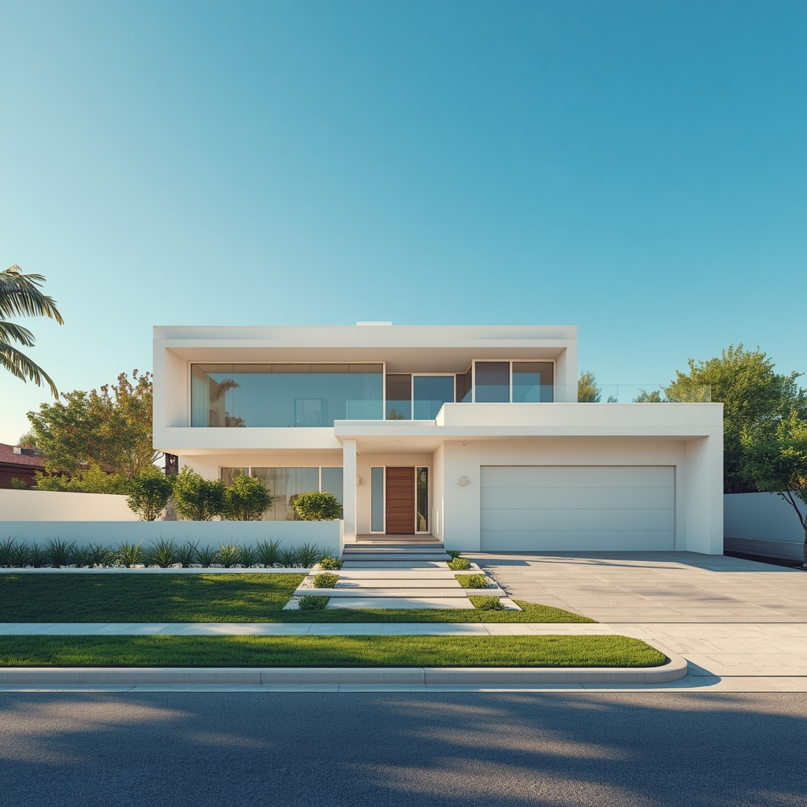
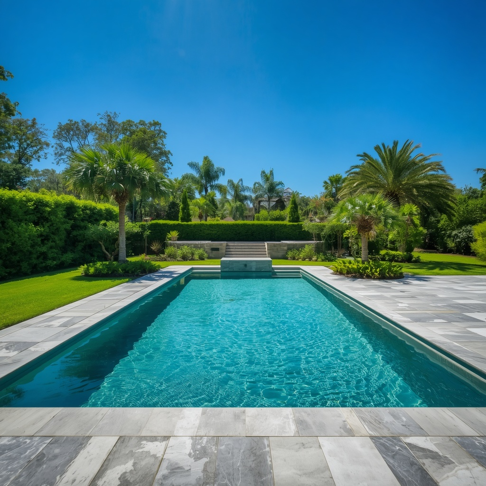

Garantie de la pompe
Échéance proposée :
Dans votre espace, une échéance trouvée ne devient une alerte qu'après votre confirmation.
Aucun rappel n’a été ajouté.

Votre espace, à votre rythme.
Suivons Camille et Alex : retrouver un document, vérifier une échéance et revoir un moment d’été.
Univers de démonstration. Fichiers, dates et comptes sont préparés ; aucune connexion ni écriture réelle.
VISITE GUIDÉE · ENVIRON 2 MINUTES
Les papiers de la maison sont rangés, les souvenirs d’été aussi. On va suivre leur histoire pas à pas.


La maison de Camille & AlexChez Camille & Alex
Échéance proposée :
Dans votre espace, une échéance trouvée ne devient une alerte qu'après votre confirmation.
Aucun rappel n’a été ajouté.
La pompe, sa facture et sa garantie sont réunies au même endroit.
Les repères viennent des annotations ajoutées par la famille, pas d’une reconnaissance de visages.
Chaque résultat indique la copie utilisée et sa source. L’original reste chez son fournisseur.
Vous pouvez aussi parcourir les autres vues. Elles peuvent afficher les données déjà présentes sur cet appareil.
Aucun fichier visible pour le moment.
Analyse en cours...
Sur cet appareil
Les photos sont issues du même index que les documents. Les annotations et dates absentes ne sont pas déduites.
Copies trouvées dans l'index :
Les numéros de compte sont propres à cette recherche. Ces copies peuvent représenter les mêmes photos. D'autres sources peuvent ne pas être indexées ; l'accès actuel aux originaux n'est pas garanti.
Copies sur cet appareil. Accès aux originaux non vérifié. Photos : métadonnées et annotations explicites, sans reconnaissance visuelle.
Espace local
 Carnet de maison
Carnet de maison
Vos autres équipements vous attendent dans le carnet.
Illustrations IA par défaut. Le statut est celui que vous avez renseigné.
Ces fiches restent sur cet appareil. Aucun compte ni partage n'est créé.
Dans le détail d'une photo, indiquez vous-même les personnes présentes pour les retrouver dans Recherche.
Suivi local
Du jour aux 90 prochains jours inclus, à partir des textes extraits fiables déjà présents dans Famili-IA. Les dates explicites et les estimations de garantie sont distinguées ; une estimation basée sur une date d'achat et une durée explicites doit être confirmée. Aucune proposition ne crée d'alerte sans votre confirmation.
Les sources peuvent être incomplètes ou périmées ; l'accès actuel aux originaux n'est pas vérifié. L'absence de proposition ne prouve pas l'absence d'échéance.
Vos rappels et leurs réglages restent sur cet appareil.
Ses repères, ses papiers et ce qui mérite votre attention.
Questions sur vos fichiers
Ici, posez une question précise pour repérer un montant, une date ou une référence dans le texte disponible. Dans Recherche, explorez vos fichiers et vos photos avec les filtres.
Sans Qwen, l’assistant utilise les règles locales existantes. Si l’option Qwen est activée, la question et jusqu’à huit extraits vérifiés sont envoyés à Ollama sur ce PC pour une réponse expérimentale. Le document complet et l’historique ne sont jamais envoyés. Le modèle ne déclenche aucune action ; une échéance admissible demande toujours votre confirmation. Les échanges ne sont pas conservés après rechargement.
Chaque question est indépendante : précisez son sujet, même après une première réponse.
Désactivé par défaut. Si activé, la question (500 caractères au plus) et jusqu’à huit extraits vérifiés sont envoyés à Ollama sur ce PC, jamais le document complet ni l’historique. Indisponible sur mobile.
Sans extrait vérifié, l’Assistant s’abstient. Aucun rappel n’est créé sans votre confirmation.
Ajouter à votre espace
Sur cet appareil · vos originaux restent à leur emplacement.
Sur mobile, choisissez plusieurs fichiers dans le dossier de votre choix : la sélection de dossier complète n'est pas prise en charge par l'application.
Formats acceptés : .txt, .md, .pdf, .jpg, .jpeg, .png, .docx, .xlsx, .xls. Indexation en arrière-plan avec progression, sans limite de nombre (10 Mo max par photo ou PDF, 1 Mo par autre fichier). Le contenu indexable dépend du format et de l'extraction disponible.
Traitement local. Ouvrir les options d’une source ne lance ni connexion ni import.
Vous pouvez aussi déposer des fichiers sur la carte. Recherche s’ouvre pendant leur traitement ; retrouvez le bilan ici.
Bilan de session, non conservé au rechargement. Les ajouts simultanés ne sont pas regroupés. Pour les services cloud, le suivi et le bilan restent dans leurs options.
Votre espace
Inventaire local
Vos originaux restent à leur emplacement
Ces nombres décrivent les fichiers enregistrés, pas des comptes connectés. Un parcours peut ne concerner qu'un compte ou une sélection.
Contenus de démonstration, distincts de vos fichiers et absents de votre index personnel.
Un parcours terminé ne garantit ni l'accès actuel aux originaux ni l'actualisation des copies.
Cet inventaire ne couvre pas l’ensemble de vos comptes. « Métadonnées seules » signifie que le contenu n’est pas indexé.
Le JSON contient les données applicatives détaillées, dont les photos personnelles de Maison et des équipements si vous en choisissez ; le PDF en donne un bilan chiffré, sans noms de fichiers ni de proches. Ni l'un ni l'autre n'exporte les originaux. Les coordonnées GPS des photos sont exclues par défaut.
Google Drive : état de session inconnu.
OneDrive : la déconnexion locale ne révoque pas l'autorisation Microsoft et ne supprime pas les copies enregistrées.
Gérer les autorisations MicrosoftLa suppression efface les données enregistrées par Famili-IA sur cet appareil. Les fichiers d’origine locaux, Google Drive, OneDrive et Dropbox ne sont pas supprimés.
Espace local
Lecture seule : aucune donnée n’est modifiée, aucun fichier importé, aucune connexion ni permission demandée. Les vues peuvent afficher des données locales déjà présentes.